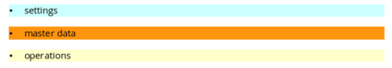
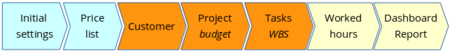

Introduction
Created sabato 21 febbraio 2015
Purpose
This manual guide you step by step to a successful time billing of your services, our approach consider project management principles and use LibreOffice Base, we created xTimeCard for our own business and now we share with you. This application does not pretend to fulfill accounting requirements, it helps IT or business consulting firms to manage their projects and bill effectively by week or month; in other words for a managers and project managers to be paid for their team's work and achievements. Nor with this tutorial we intent to explain time billing in details, rather aims to introduce the topic and show how can be easily approached by our software. As a matter of fact xTimeCard simplifies tracking of work, control over budget and preparation of bills and reports for customer.
Learn and customize
With this software you received this tutorial that contains information and step-by-step guide on how to use abut also to customize it. Moreover my-HEXAGON is ready to modify for your purposes, however the choice of LibreOffice Base as base technology was meant to facilitate learning and allow both developers and users to customize for specif needs. Moreover the customize section of this tutorial suggests how to switch from a personal use to a multi-user environment, for instance integrating to a largely used database such as MySQL or connecting to a workflow based on cloud technologies like Google Apps.
Organization
As you may expect xTimeCard distinguishes between:

Settings are needed for the software to know more about you, while master data refer to customers and projects and they do not change, finally operations record your work and allow to account and be paid for.

Settings
To get started with xTimeCard you need at least to have your employee and the price of your activities to be paid clearly defined. For the sake of simplicity xTimeCard do not feature extensive information like resources, call/info center and do not consider discounts or customer's price lists, but these optional features may be a good reason for customization.
Master Data
The essential information to properly run xTimeCard are the projects your team performs for your customer and the customer himself. Generally speaking any project has a well defined project plan, which is a task list, milestones, assigned resources (human by hourly rate or material), time frame, risk and critical path.
For this tutorial we suggest to work the Gantt chart using a spreadsheet or Google spreadsheet and the add-on called ProjectSheet (this allow real-time collaboration).
Operations
Every activity is recorded by the team member or the project manager in xTimeCard at the end of the day, therefore everyday week-end a delta comparison of actual over budget is available to the project manager and this may lead to report and bill the customer.
Backlinks:
Home:Software:xTimeCard